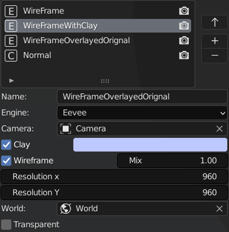
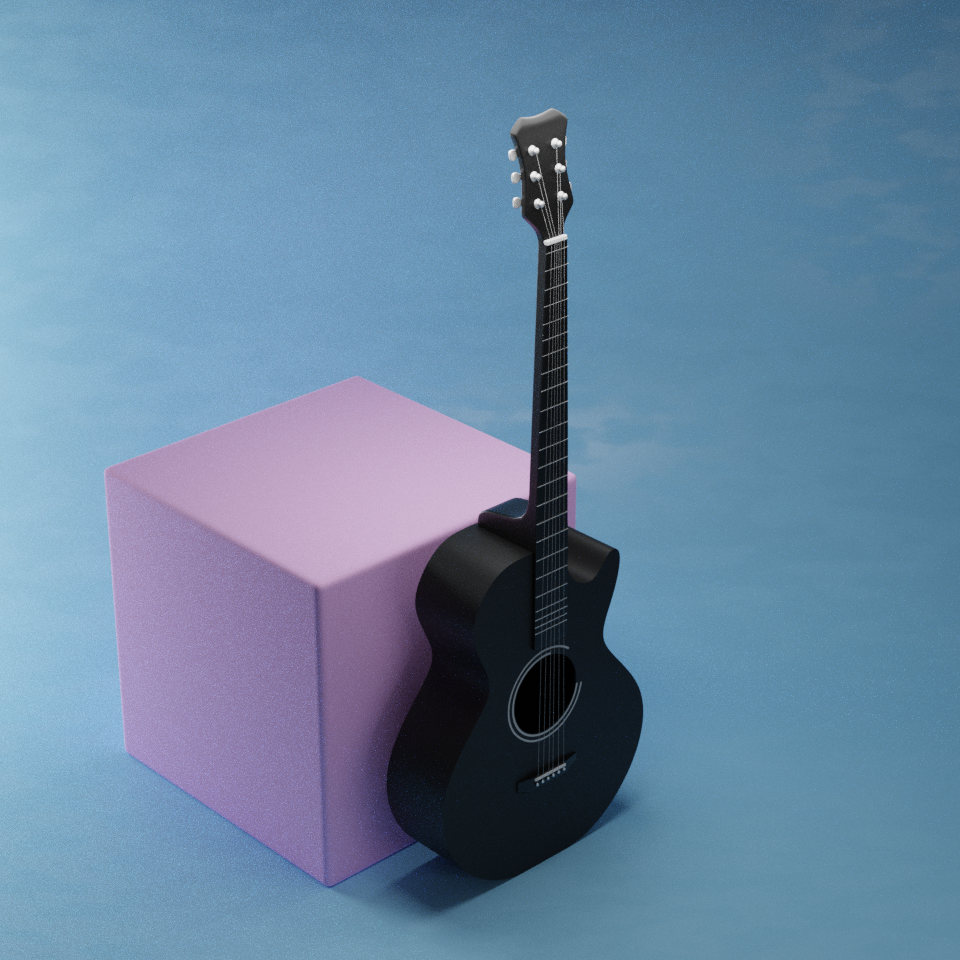

Camera And Render Tools¶

Interactive Camera Adjust¶
Click Interactive Camera Adjust in N-Panel or use shortcut ALT+C to invoke Camera Adjust.

C : Cycle between all available cameras in the scene. F : Enable Focus Scroll. Once activated use the mouse scroll wheel to change the focus object.LMB or one of these keys to confirm and Exit Focus Scroll. D : Toggle Depth Of Field for the selected Camera. It should be turned on if you use the focus scroll else effect will not be visible. A : Adjust Aperture (degree of blur) for the depth of field. Z : Zoom in and out by changing the sensor width of the camera (does not change the focal length).
Render Aspect Ratio¶
Click any button to set the output resolution (width:height). Hold down CTRL while clicking any button to set the output resolution (height:width) Example If the current output resolution is 1920*1080, clicking the 2:1 button will set the output resolution to 1920*960. If you hold down CTRL while clicking, the output resolution will be set to 2160*1080.
Render Resolution¶
Click any button to multiply the current output resolution by that number. Hold down CTRL to divide, keeping the aspect ratio the same. For example, if the current aspect ratio is 16:9. If you click HD, the render resolution will be set to 1280720, but if it is 9:16, the render resolution will be set to 7201280. Similarly:
FHD :1920*1080 or 1080*1920
2K :2560*1440 or 1440*2560
4K :3840*2160 or 2160*3840
It works for any aspect ratio
Focal Length¶
It’s as simple as it sounds, it sets the focal length of the scene’s active camera.

Add Backdrop¶

Scroll Mouse Wheel To Switch Backdrops. Press A to change alignment of the backdrop. There are two alignment options:
Object
Camera
Click LMB to confirm and enter Adjust Mode. Scroll to adjust the bevel segments. Move the mouse on the horizontal axis to adjust the bevel width. Press C,R or M to change color, roughness or metallicity respectively.
Add Lights¶

Similar to backdrops To Backdrops, use Mouse Wheel to switch the lights and A to change the alignment Click LMB to confirm To Confirm and enter Adjust Mode. Move the mouse on the horizontal axis to adjust Light Strength.
Set Render Path¶
Creates a directory with the file name and output path is set in the output settings. Also adds a file output node to the compositor.
Setup Denoising¶
Enables Denoising Data (Cycles) and add Denoise node connected right after render layers node
Batch Rendering¶
Create render batches and render them all with just one click. All outputs will be automatically saved to a folder created in the same directory as the blend file. The name of the folder will be <Filename> <Render Engine> Example
 In the scene shown above, i have created 4 render presets(shown below) in the batch render section.
In the scene shown above, i have created 4 render presets(shown below) in the batch render section.
|
 |
|---|---|
|
|


Clicking on Render All button in render menu will produce following 4 Outputs
|
|
|---|---|
|
 |


Images Rendered Using Eevee Will Be Saved Into <FileName Eevee> Directory while Images Rendered Using Cycles Will Be Saved Into <FileName Cycles> Directory Note:- While only a few settings are shown under each render preset, almost all render-related settings are saved when you create a preset, so if you want to change another setting, you can just click on the preset, whereupon all the settings will load and you can change anything you want and click the “Update” button (up arrow).
Some batch render specific settings are explained below:
Engine : Render engine to use.
Camera : Camera to use for rendering
Clay : Whether to use clay material or not (clay material is added to all objects in the scene and removed after rendering)
Clay color (only visible if clay is activated):Color of the clay material Wireframe: whether to overlay the wireframe or not
Mix : mixing factor by which the normal render is mixed (overlaid) with the wireframe (a setting of 0 means the normal render is not visible at all, as shown in example 1, and a setting of 1 means the normal render is visible, as shown in example 3)nd if set to 1 normal render will be visible as shown in example 3)
Note:- Camera Location and rotation are also saved when you create a preset. So you can use the same camera to get renders from different locations and rotations.